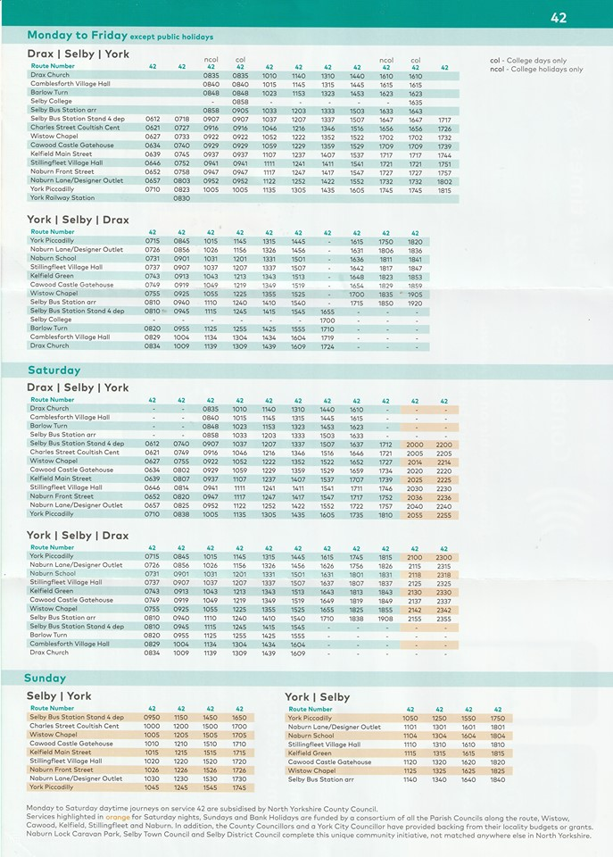

<!-- Main -->
<div id="main" class="wrapper orangepurple">
  <div class="container">
    <header class="major">
      <h2>{{ page.title }}</h2>
      <!-- <span class="byline">Integer sit amet pede vel arcu aliquet pretium</span> -->
    </header>
    <div class="12u" id="content">
      <h2>Bus</h2>
      <p>The 42 service to Selby and York run through Cawood regularly, also passing through several other villages such as Riccall and Wistow. 42 Bus Timetable:</p>
      <p>
        <a href="assets/images/42-bus-timetable.jpg" target="_blank">
        </a>
      </p>

      <h2>Cycling</h2>
      <p>Cawood is a bike-friendly village and there are plenty of places to park and lock bikes. Cawoodstock venues will endeavour to help with safe places to park bikes if you ask them nicely :-)</p>
      <hr>

      <h2>Walking</h2>
      <p>Walking: We hope lots of Cawood residents will want to attend, so of course if you live within the village please walk to the venues as this minimises traffic and parking issues, and it's good for you!</p>
      <p>Cawood is also fairly easily walkable from our nearest neighbour villages Ryther, Kelfield, Biggin, Wistow and Stillingfleet - the walk takes around an hour and if you check the maps you can often find quiet, low car-traffic routes such as <a href="https://www.google.co.uk/maps/dir/53.8139746,-1.1006264/53.8330326,-1.1296272/@53.8259577,-1.1159757,14z/data=!4m9!4m8!1m5!3m4!1m2!1d-1.1067464!2d53.830244!3s0x48793b8dedd735ad:0xc0e82ed0b20f0d87!1m0!3e2?hl=en-GB">this 'back roads' route from Wistow to Cawood</a></p>
      <hr>

      <h2>Taxi</h2>
      <p><a href="https://flyerprivatehire.co.uk">Flyer Private Hire</a> (07851 144249) are a local taxi company who are aware of Cawoodstock and are ready to take bookings for your Cawoodstock transport needs. Why not club together with friends and get a minibus?</p>
      <p>There are also many other local taxi companies - <a href="https://www.google.co.uk/maps/search/taxi/@53.8145403,-1.1703318,13z?hl=en-GB">here's a Google Maps search</a> which will show you all the taxi companies in the area so you can choose your nearest or preferred company</p>
      <hr>

      <h2>Car</h2>
      <p>{% include info/parking.html %}</p>
      1) We have now secured some overflow parking just off Rythergate in a farm field (<i class="fas fa-map-marker-alt"></i> <a href="https://www.google.co.uk/maps/place/53%C2%B050'06.2%22N+1%C2%B008'00.4%22W/@53.8350556,-1.1345503,348m/data=!3m2!1e3!4b1!4m6!3m5!1s0x0:0x0!7e2!8m2!3d53.835054!4d-1.1334549">location on Google map</a>) Massive thanks and applause to Georgina and Graham Liddle for letting us use this field once again <br/>
      2) The car parks at Cawood Primary School will also be open over the weekend. (<i class="fas fa-map-marker-alt"></i> <a href="https://www.google.co.uk/maps/place/Cawood+C+E+Primary+School/@53.8294213,-1.1302681,255m/data=!3m1!1e3!4m12!1m6!3m5!1s0x48793be35589f8ad:0x24c12be4557e5b2f!2sCawood+C+E+Primary+School!8m2!3d53.8294214!4d-1.1294657!3m4!1s0x48793be35589f8ad:0x24c12be4557e5b2f!8m2!3d53.8294214!4d-1.1294657">location on Google map</a>) We'd like to reserve this space for disabled parking - so please could able-bodied Cawoodstockers consider parking on the farm field off Rythergate if you can. Be Excellent To Each Other!
      </p>
      <hr>
    </div>
  </div>
</div>
